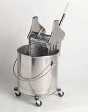

|  |
- This round stainless steel bucket has a polished interior and 2" casters. With a 32 quart capacity the bucket is fashioned from one piece of stainless steel - leak free and easy to sanitize. B3A is fully autoclavable.
- Product id: B-3, B-3A
- Material: Stainless Steel
- Accessories: W-6 Downward Press Wringer, W-4 MegaWringer
- Application: Floors, Walls
|